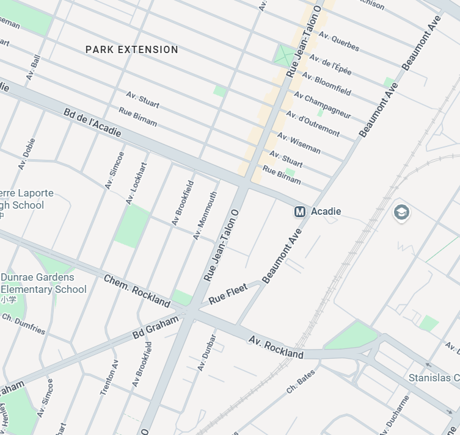

Design Review 2
Explore nearby
live performances
Role: Audience member
You are walking around the city and feel like watching a live street performance. You don't have a particular performer in mind, so you open Corner Set to explore nearby performances.
LIVE NEAR YOU

LIVE